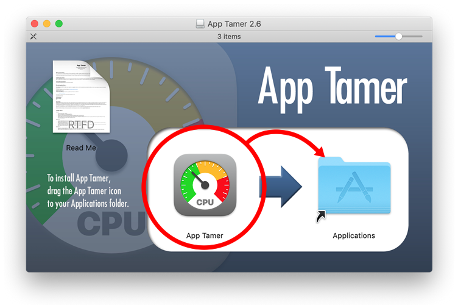

App Tamer Help
App Tamer HelpInstallation

Installing App TamerApp Tamer can be placed anywhere on your hard disk, but we recommend
that you put it in your Applications folder alongside Safari, Preview,
Mail, and all the other applications that came with your Mac. Just
drag the App Tamer application icon to your Applications folder.
Then double-click App Tamer to launch it and
explore.
Uninstalling App Tamer
Quit App Tamer from its menu in your menu bar if it's running, then drag the App Tamer application icon to the Trash to uninstall it.
A few gory details
The first time you run App Tamer, it will ask for your administrator password so it can install its helper application. This helper application is used to get information about the applications running on your computer. It is named com.stclairsoft.AppTamer.Helper and is placed in the following location:
/Library/PrivilegedHelperTools/com.stclairsoft.AppTamer.Helper
This helper application is only run by App Tamer, so if you remove the App Tamer application it will never be used. However, if you want to completely remove all traces of App Tamer from your system, you should delete this file too.